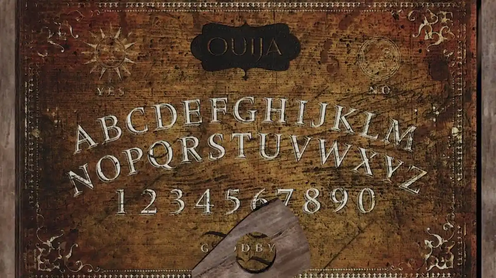

El muñeco vudú se caracteriza por tener varios alfileres por toda su superficie (incluyendo en su corazón). Cuando lo usas uno de estos se le clava completamente. Esto provoca que haga algún evento (como tirar objetos, abrir la puerta o tocar la ventana). Si le da en el corazón empezará cacería maldita.
La caja musical es un objeto maldito que toca una melodía especial que hace que el fantasma se revele (lo que permite hacerle una foto) acercándose a esta. Después de unos segundos de que la toque empezará la cacería maldita.
El pentáculo es un círculo satánico con cinco velas en cada extremo. Cuando las enciendes el fantasma aparece en medio, empezando una cacería maldita (aprovecha para sacarle una foto ahí).
Con el espejo puedes ver la habitación del fantasma (lo que te baja una cordura). Si tardas mucho viéndolo se romperá y empezará cacería maldita.
La ouija es un objeto maldito con el que te puedes comunicar con el fantasma. Este te responderá moviendo el puntero y formando las palabras. Las oraciones a decirle están en el siguiente enlace: -->Pincha aquí<--
La mano de mono te puede conceder hasta cinco deseos, después de los cuales el fantasmas entrará en cacería maldita. Los deseos posibles son: -->Pincha aquí<--
Las cartas del tarot es un conjunto de cartas las cuales tienen un efecto cada una. Con estas vas sacando una a una hasta las 10. Las posibles cartas con sus efectos son: -->Pincha aquí<--